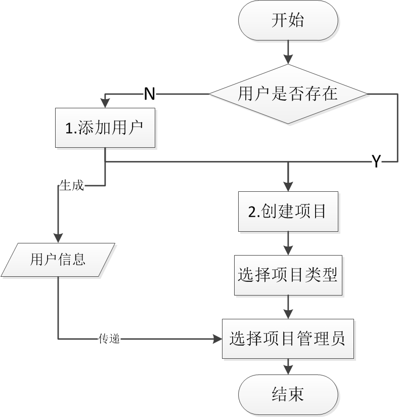

2.2 项目创建
项目创建的业务场景通过两个业务操作：A和B来完成。具体流程如下图所示。

锐测盒子典型业务场景图
(1) 添加用户
a) 系统管理员登录本系统，点击进入“用户管理”页面。
b) 点击“添加用户”操作按钮，输入用户基本信息，包括用户名、密码和邮箱地址。详情参见“用户管理”章节。
(2) 创建项目
a) 系统管理员登录本系统，点击“项目管理”进入页面。
b) 点击“新增项目”，输入项目信息，包括项目名称、项目类型、项目管理员和项目描述，详情参见“项目管理”章节。